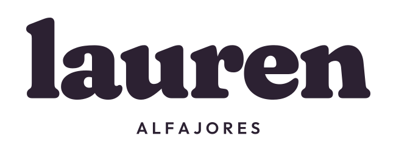

09 · NUEVA

Maicena
Parte del 01: letras cremosas, serifs redondeados y proporciones más compactas.
UNA IDENTIDAD PARA LOS ALFAJORES
Partimos de tus favoritos: 01, 02 y 04.
Cinco nuevas formas de ser Lauren.
PUESTOS EN CONTEXTO
HOLA, SOMOS LOS ALFAJORES DE LAUREN.
Nuestro clásico de maicena y arequipe.
En grande, en minis y para regalar.

Viendo: 09 Maicena